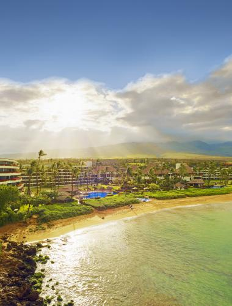

Maui's diverse landscapes are the result of its combination of geology, topography, and climate. Each volcanic cone in the chain of the Hawaiian Islands is formed from basalt, a dark, iron-rich/silica-poor rock, which poured out of thousands of vents as fluid lava over millions of years. Several of its volcanoes were close enough to each other that lava flows on their flanks overlapped, merging into a single island. Maui is one such "volcanic doublet," formed from two shield volcanoes that overlapped to form the isthmus.
The older, western volcano has eroded considerably and is cut by numerous sharp drainages, forming the peaks of the West Maui Mountains (in Hawaiian, Mauna Kahalawai). Puʻu Kukui is the highest of the peaks at 5,788 ft (1,764 m). The larger, younger volcano to the east, Haleakalā, rises to 10,023 ft (3,055 m) above sea level, and measures 5 mi (8 km) from seafloor to summit.
The eastern flanks of both volcanoes are cut by deeply incised valleys and steep-sided ravines that run downslope to the rocky, windswept shoreline. The isthmus was formed by sandy erosional deposits.
Maui's last eruption (originating in Haleakalā's Southwest Rift Zone) likely occurred between 1480 and 1600; the resulting lava flows are located at Cape Kīnaʻu between ʻĀhihi Bay and La Perouse Bay on the southwest shore of East Maui. Haleakalā is thought dormant and capable of further eruptions.
Maui is part of a much larger unit, Maui Nui, that includes the islands of Lānaʻi, Kahoʻolawe, Molokaʻi, and the now submerged Penguin Bank. During periods of reduced sea level, including as recently as 200,000 years ago, they join as a single island due to the shallowness of the channels between them.
The older, western volcano has eroded considerably and is cut by numerous sharp drainages, forming the peaks of the West Maui Mountains (in Hawaiian, Mauna Kahalawai). Puʻu Kukui is the highest of the peaks at 5,788 ft (1,764 m). The larger, younger volcano to the east, Haleakalā, rises to 10,023 ft (3,055 m) above sea level, and measures 5 mi (8 km) from seafloor to summit.
The eastern flanks of both volcanoes are cut by deeply incised valleys and steep-sided ravines that run downslope to the rocky, windswept shoreline. The isthmus was formed by sandy erosional deposits.
Maui's last eruption (originating in Haleakalā's Southwest Rift Zone) likely occurred between 1480 and 1600; the resulting lava flows are located at Cape Kīnaʻu between ʻĀhihi Bay and La Perouse Bay on the southwest shore of East Maui. Haleakalā is thought dormant and capable of further eruptions.
Maui is part of a much larger unit, Maui Nui, that includes the islands of Lānaʻi, Kahoʻolawe, Molokaʻi, and the now submerged Penguin Bank. During periods of reduced sea level, including as recently as 200,000 years ago, they join as a single island due to the shallowness of the channels between them.
 Maui is the leading whale-watching center in the Hawaiian Islands for the humpback whales who winter in the sheltered ʻAuʻau Channel among the islands of Maui county. Many whales migrate approximately 3,500 mi (5,600 km) from Alaskan waters each autumn and spend November-April mating and birthing in the warm waters. They are typically sighted in pods: small groups of several adults, or groups of a mother, her calf, and a few suitors. Humpbacks are an endangered species protected by U.S. federal and Hawaiʻi state law. An estimated 21,000-26,000 humpbacks live in North Pacific waters. Although they face many dangers, due to pollution, high-speed commercial vessels, and military sonar testing, their numbers have increased rapidly in recent years, estimated at 7% growth per year.
Maui is the leading whale-watching center in the Hawaiian Islands for the humpback whales who winter in the sheltered ʻAuʻau Channel among the islands of Maui county. Many whales migrate approximately 3,500 mi (5,600 km) from Alaskan waters each autumn and spend November-April mating and birthing in the warm waters. They are typically sighted in pods: small groups of several adults, or groups of a mother, her calf, and a few suitors. Humpbacks are an endangered species protected by U.S. federal and Hawaiʻi state law. An estimated 21,000-26,000 humpbacks live in North Pacific waters. Although they face many dangers, due to pollution, high-speed commercial vessels, and military sonar testing, their numbers have increased rapidly in recent years, estimated at 7% growth per year.
Maui is home to a large rainforest on the northeastern flanks of Haleakalā, which serves as the drainage basin for that side of the island. Difficult terrain has prevented the exploitation of much of the forest.
Maui is home to many coral reefs. However, many have been damaged by pollution, run-off, and tourism, although sea turtles, dolphins, and Hawaii's celebrated tropical fish, are still common. Leeward Maui once boasted a dry cloud forest, but this was destroyed by human activities over the last three hundred years.

Join our membership program for 3% off all trips! Members also get an extra 1% discount at when they have flown over 50000 miles with us!
Join us at (123)-456-7890